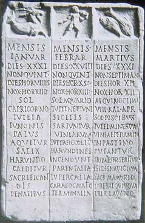

|
EL CALENDARIO ROMANO
La Vida de los romanos estaba regida por un calendario de origen etrusco o anterior. El año constaba de 10 meses; cuatro de 31 días y seis de 30, en total 304 días. Los cuales eran divididos a su vez en décadas, es decir, 10 días (semanas de 10 días).
|
|
 |
El día
estaba dividido en 24 horas, 12 diurnas y 12 nocturnas, guiadas por el sol.
El tiempo era medido por relojes de sol, solarium. También se
conocía el uso de las clepsydra, relojes de agua, parecidos a los de
arena. Por la mañana estaba la prima, de 6 a.m a 7, la secunda de 7 a 8, la tertia de 8 a 9, la quarta de 9 a 10, la quinta de 10 a 11 y la sexta de 11 a 12. Por la tarde la septima de 12 a 1, la octava de 1 a 2, la nona de 2 a 3, la decima de 3 a 4, la undecima de 4 a 5, la duodecima de 5 a 6. Por la noche la prima vigilia de 6 a 9, la secunda vigilia de 9 a 12, la tertia vigilia de 12 a 3 y por último la quarta vigilia de 3 a 6 a.m. Los días eran: Lunes del latín "lunae dies", día de la luna. Se atribuye a la luna una cierta influencia sobre los seres humanos. Martes del latín "martis dies", día de Marte. Marte era el dios de la guerra. Miércoles del latín "mercuri dies", día de Mercurio. Era el dios del comercio y el de los viajeros, por ese motivo sus templos se edificaban a la entrada de los pueblos. Jueves del latín "jovis dies", día de Júpiter. El dios del cielo, de la luz del día, del tiempo atmosférico. Viernes del latín "veneris dies", día de Venus. Antes de la fundación de Roma, Venus era venerada como la diosa protectora de los huertos, pero a partir del siglo II a.e.c. se la denominó diosa del amor. Sábado "saturnis dies" día de Saturno, fue sustituido por los cristianos por el sabbatum, del hebreo "sabbath" que significa descanso. Para los hebreos y la gente que vive en Israel es el último día de la semana. Domingo "solis dies", sustituido por los cristianos posteriormente, del latín "dominicus dies", día del Señor. En el 321, el emperador romano Constantino I el Grande decretó que el domingo fuera considerado como el principal día de la semana, en reemplazo del sábado. |
|
El año comenzaba el 1 de marzo. Los meses eran: Martius, dedicado a Marte; también era venerado como una divinidad de la vegetación, ya que en este mes empieza la primavera y con ella el florecer de las plantas. (31 días). Aprilis, derivado de Aperire (Aperta), abrir, porque la tierra se abre este mes, “las flores”; también tiene que ver con una veneración a “Aper”, jabalí venerado por los romanos y la etimología de origen oriental “aparas” siguiente, o sea, siguiente al primer mes, ya que es el segundo (30). Maius consagrado a Maia, una de las siete hijas del personaje mitológico griego Atlas y Pleyone, también se identifica con una diosa unida a Vulcano. O con dos "maiorum” ancianos, con lo cual este seria su mes (31). Junio dedicada a la diosa etrusca Iuno, muy venerada por las mujeres casadas y las jóvenes que se disponían a dar a luz (30). El resto de meses adquiría su nombre según el orden numérico Quintilis (31), Sextilis (30), September (30), October (31), November (30) y December (30). Posteriormente los Etruscos introdujeron los meses de Enero y Febrero. Numa Pompilo (716-673 a.e.c.) añadió los meses de Ianuarius, dedicado a Jano dios de las puertas, al comienzo del año; pero una vez que la dinastía fue expulsada en el siglo VI a.e.c. ,siguió siendo Marzo el primer mes del año hasta que a mediados del siglo II a.e.c. se retomo Enero. Y Februarius, dedicado a Plutón (Februus) dios del infierno, de los muertos; al final del año, se consagró como un rito de purificación, para que los difuntos no hicieran daño o no molestaran. Además redujo el número de días de los meses para sumar un total de 355 días, con lo que adaptaba el calendario al ciclo lunar. Los meses quedarían así: Ianuarius (29 días), Februarius (28), Martius (31), Aprilis (29), Maius (31), Iunius (29), Quintilis (31), Sextilis (29), September (29), October (31), November (29) y December (29). No existían meses con número de días par, porque los primeros romanos los consideraban de mala suerte, excepto el mes de febrero, y por esa misma razón el año tiene 355 días, en lugar de los 354 de ciclo lunar. Cada dos años se añadía un mes de 22 ó 23 días (Mercedinus, o Mercedonius). Este mes se intercalaba entre el 23 y el 24 de febrero, y los cuatro días que quedaban de febrero se consideraban incluidos en Mercedinus. Así el año tenia un total de 366 días y cuarto. Para evitar este desfase en el año 450 a.e.c. se acordó que cada ocho años se intercalara tres veces el Mercedinus: la octoetérida. La octoetérida se fundamenta en los cálculos que realizó Cleostrato de Tenedos en el año 500 a.e.c. La intercalación, y el cómputo de los años, estaba en manos de los sacerdotes, quienes obraban, según sus intereses. Las reglas de cálculo del calendario fueron secretas hasta que Cneo Flavio las robó en el 304 a.e.c. El sistema era demasiado complicado y arbitrario. En tiempos de Julio César había un desfase de tres meses entre el año civil y el astronómico, por lo que se hacía imprescindible una reforma. El desajuste era tan grande que el Emperador encargó al astrónomo griego Sosígenes que le asesorase sobre la reforma del calendario. Sosígenes aconsejó abandonar el calendario lunar para adoptar un calendario basado únicamente en el año solar. Cesar decretó a continuación que cada año tendría a partir de entonces 365 días, añadiéndose un día extra cada cuatro años (año que más tarde se vino a llamar bisiesto), en el mes de febrero. Para compensar el desfase acumulado, se decretó que el año 46 a.e.c. tendría 445 días. En honor del reformador, se cambió el nombre de un mes, que vino a llamarse julio. Este calendario se conoce como juliano desde entonces. Este calendario es usado hoy en día en algunas iglesias orientales. En Occidente se uso hasta 1582, año en que el Papa Gregorio XIII lo corrigió y es el que utilizamos en la actualidad. En la época imperial, quintilis y sextilis fueron sustituidos por julio y agosto en honor de Julio César y de Octavio Augusto. La manera de contar los días resulta al menos curiosa. El mes lunar tenía tres fechas señaladas: las calendae (el primer día y es de donde proviene la palabra de calendario, se correspondía con la luna nueva, las nonae (el quinto día, se correspondía con el cuarto creciente) y los idus, la luna llena, (el decimotercer día).
Los romanos contaban sus años, en los documentos oficiales, según quien gobernara, reyes cónsules o emperadores. Fue Terencio Varrón quien estableció, definitivamente, que la fundación de Roma había tenido lugar en el año 753 a.e.c. No obstante hubo intentos anteriores como el de Fabio Pictor, que la estableció en el 747 a.e.c.; Polibio, 750 a.e.c.; Marco Porcio Catón, 751 a.e.c.; y Verrio Flaco, 752 a.e.c.; datos que se deben tener en cuenta a la hora de datar hechos. Tito Livio se adhiere a la fecha de Catón, aunque en ocasiones usa la de Fabio Pictor. Cicerón usa el cómputo de Varrón, que al final es el usado por Plinio, y el empleado por los historiadores modernos. Esta era comenzaba el 21 de abril, aunque normalmente se reduce al 1 de enero. Los días festivos del calendario romano eran marcador por el Pontifex Maximus, quien decidía cuando se podían realizar actividades públicas y privadas. En resumen; el calendario desde la época imperial hasta el año 1582 con la reforma del papa Gregorio XIII, era: Ianuarius (30 días), Februarius (28), Martius (31), Aprilis (31), Maius (31), Iunius (30), Iulius (31), Augustus (31), September (30), October (31), November (30) y December (31). Cada 4 años se añade un día extra al mes de Febrero para corregir el desfase con el calendario Astronómico; llamado año bisiesto. Este es el llamado calendario Juliano.
|